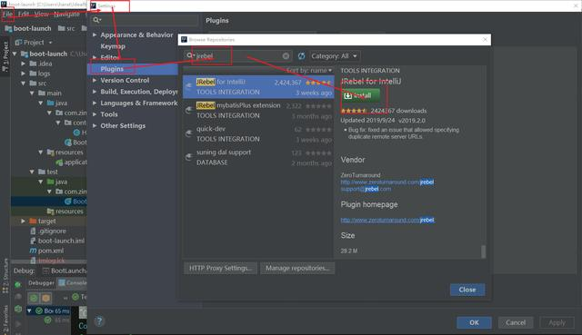
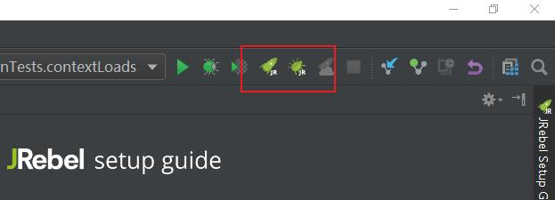
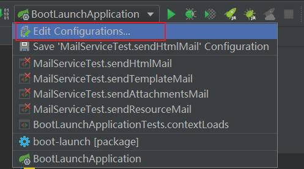
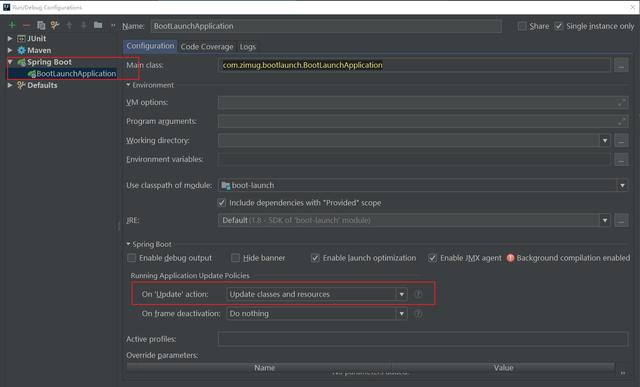

在实际的开发过程中，我们经常修改代码之后，手动的重启项目，查看修改效果。那么有没有一种方式能够快速的、自动的帮我们将修改代码自动更新，避免手动重启，从而提高开发效率呢？是有的，在我之前的文章里面给读者介绍了使用springboot-devtools实现热加载的方法。本文就给大家介绍另外一种方式：使用Jrebel插件完成修改代码及资源的自动更新功能。
但是对于这个功能很多人对功能的叫法有争议，笔者查询了维基百科、官方文档，没有得到合理的答案，也没有权威的定义，笔者知道的就有：热启动、热加载、热更新、热部署、热切换。这几个词从语义上是有区别的，但是叫什么并不重要，实现了最重要，毕竟绝大部分程序员为了使用这个功能方便开发，也不是专业的搞学术研究的。
如果哪位同学获得了权威渠道的说法，可以将文档连接反馈给我。我再理解一下，争取做到学术研究级别的一丝不苟！在此之前笔者按照自己的想法和英文翻译的角度去使用这些名词。
使用Jrebel插件实现热加载，这是最简单的一种方式，但是有一定的个局限性，Jrebel插件是收费的。虽然有破解方案，但是不建议！有需要的同学自行研究，这里就不多做介绍了。（如果确实有需要，可以参考文末的我的博客地址）
IntelliJ IDEA是笔者最常使用的IDE，本文就以在IDEA中Jrebel的安装及使用进行示例说明。按照箭头所示选择安装。安装完成之后，要重启IDEA才能生效。

在安装完成之后，右上角会多出这样几个按钮。点击之后会提示你进行插件激活，可以购买注册码激活，也可以在线激活。也可以填写个人姓名、邮箱、电话之后获取10天的试用期！

这个配置不仅结合Jrebel使用有效，对于其他的方式实现热加载，代码及资源的自动更新也同样适用。

在Spring Boot项目启动配置中，选择下图中的红色框中的内容：uodate classes and resources on ‘update’ action

配置完成后，通过右上角的JR按钮启动SpringBoot项目。就可以实现改动代码和资源的自动更新。
最后还是要说明一下，这种方式虽然简单，但是Jrebel插件是收费插件。如果经济上不困难，请尊重原作者的劳动成果。